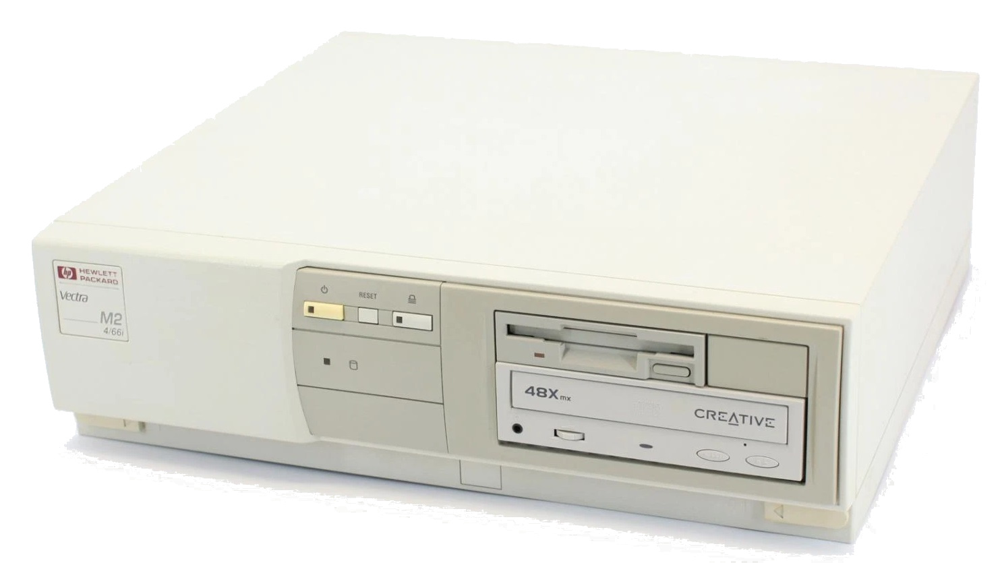

HP Vectra M2 4/66i (1992) |
IBM PS/1 2168 (1992) |
Compaq DeskPro 486s/25M (1993) |
|---|---|---|
|
|
|
 |
 |
 |
| ..more info at Wikipedia | ..more info at Wikipedia | ..more info at Wikipedia |
Sources used to create this page:
oldcomputer.info
homecomputermuseum.nl
wikipedia.org